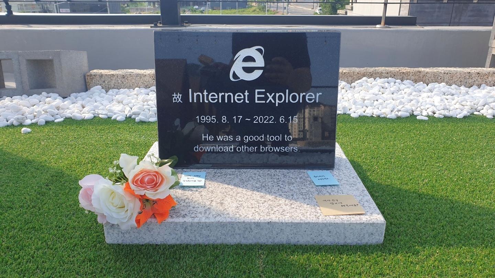

Farewell to Internet Explorer
The browser that once ruled the internet

A South Korea Techie's Tribute To The 'Dead' Web Browser
A Journey Through Internet Explorer's Life:
- 1995 - Launches as part of the Windows 95 Plus! pack
- 1997 - IE4 released, introducing dynamic HTML
- 2001 - IE6, famous for both popularity and security issues
- 2006 - IE7 brings tabbed browsing to the game
- 2009 - IE8, with improved standards compliance
- 2011 - IE9 and the introduction of HTML5 support
- 2013 - IE10 launches with Windows 8, touch screen support
- 2015 - Microsoft Edge replaces IE as the new default browser
- 2022 - Official retirement of Internet Explorer
"Internet Explorer may have been a bit slow and quirky, but it was a gateway to the internet for an entire generation."
-- A Nostalgic Web User